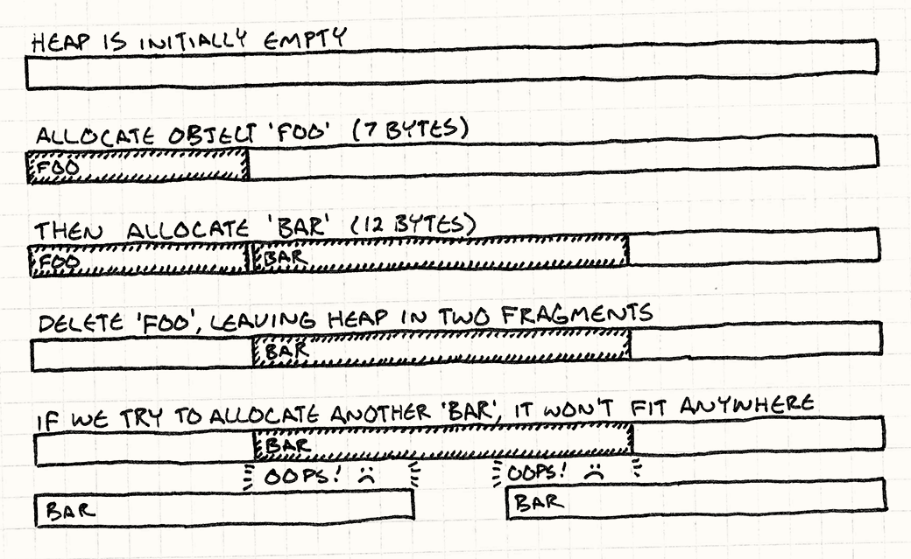

Object Pool
Game Programming PatternsOptimization Patterns
Intent
Improve performance and memory use by reusing objects from a fixed pool instead of allocating and freeing them individually.
Motivation
We’re working on the visual effects for our game. When the hero casts a spell, we want a shimmer of sparkles to burst across the screen. This calls for a particle system, an engine that spawns little sparkly graphics and animates them until they wink out of existence.
Since a single wave of the wand could cause hundreds of particles to be spawned, our system needs to be able to create them very quickly. More importantly, we need to make sure that creating and destroying these particles doesn’t cause memory fragmentation.
The curse of fragmentation
Programming for a game console or mobile device is closer to embedded programming than conventional PC programming in many ways. Memory is scarce, users expect games to be rock solid, and efficient compacting memory managers are rarely available. In this environment, memory fragmentation is deadly.
Fragmentation means the free space in our heap is broken into smaller pieces of memory instead of one large open block. The total memory available may be large, but the largest contiguous region might be painfully small. Say we’ve got fourteen bytes free, but it’s fragmented into two seven-byte pieces with a chunk of in-use memory between them. If we try to allocate a twelve-byte object, we’ll fail. No more sparklies on screen.

Even if fragmentation is infrequent, it can still gradually reduce the heap to an unusable foam of open holes and filled-in crevices, ultimately hosing the game completely.
The best of both worlds
Because of fragmentation and because allocation may be slow, games are very careful about when and how they manage memory. A simple solution is often best — grab a big chunk of memory when the game starts, and don’t free it until the game ends. But this is a pain for systems where we need to create and destroy things while the game is running.
An object pool gives us the best of both worlds. To the memory manager, we’re just allocating one big hunk of memory up front and not freeing it while the game is playing. To the users of the pool, we can freely allocate and deallocate objects to our heart’s content.
The Pattern
Define a pool class that maintains a collection of reusable objects. Each object supports an “in use” query to tell if it is currently “alive”. When the pool is initialized, it creates the entire collection of objects up front (usually in a single contiguous allocation) and initializes them all to the “not in use” state.
When you want a new object, ask the pool for one. It finds an available object, initializes it to “in use”, and returns it. When the object is no longer needed, it is set back to the “not in use” state. This way, objects can be freely created and destroyed without needing to allocate memory or other resources.
When to Use It
This pattern is used widely in games for obvious things like game entities and visual effects, but it is also used for less visible data structures such as currently playing sounds. Use Object Pool when:
-
You need to frequently create and destroy objects.
-
Objects are similar in size.
-
Allocating objects on the heap is slow or could lead to memory fragmentation.
-
Each object encapsulates a resource such as a database or network connection that is expensive to acquire and could be reused.
Keep in Mind
You normally rely on a garbage collector or new and delete to handle
memory management for you. By using an object pool, you’re saying, “I know
better how these bytes should be handled.” That means the onus is on you to deal
with this pattern’s limitations.
The pool may waste memory on unneeded objects
The size of an object pool needs to be tuned for the game’s needs. When tuning, it’s usually obvious when the pool is too small (there’s nothing like a crash to get your attention). But also take care that the pool isn’t too big. A smaller pool frees up memory that could be used for other fun stuff.
Only a fixed number of objects can be active at any one time
In some ways, this is a good thing. Partitioning memory into separate pools for different types of objects ensures that, for example, a huge sequence of explosions won’t cause your particle system to eat all of the available memory, preventing something more critical like a new enemy from being created.
Nonetheless, this also means being prepared for the possibility that your attempt to reuse an object from the pool will fail because they are all in use. There are a few common strategies to handle this:
-
Prevent it outright. This is the most common “fix”: tune the pool sizes so that they never overflow regardless of what the user does. For pools of important objects like enemies or gameplay items, this is often the right answer. There may be no “right” way to handle the lack of a free slot to create the big boss when the player reaches the end of the level, so the smart thing to do is make sure that never happens.
The downside is that this can force you to sit on a lot of memory for object slots that are needed only for a couple of rare edge cases. Because of this, a single fixed pool size may not be the best fit for all game states. For instance, some levels may feature effects prominently while others focus on sound. In such cases, consider having pool sizes tuned differently for each scenario.
-
Just don’t create the object. This sounds harsh, but it makes sense for cases like our particle system. If all particles are in use, the screen is probably full of flashing graphics. The user won’t notice if the next explosion isn’t quite as impressive as the ones currently going off.
-
Forcibly kill an existing object. Consider a pool for currently playing sounds, and assume you want to start a new sound but the pool is full. You do not want to simply ignore the new sound — the user will notice if their magical wand swishes dramatically sometimes and stays stubbornly silent other times. A better solution is to find the quietest sound already playing and replace that with our new sound. The new sound will mask the audible cutoff of the previous sound.
In general, if the disappearance of an existing object would be less noticeable than the absence of a new one, this may be the right choice.
-
Increase the size of the pool. If your game lets you be a bit more flexible with memory, you may be able to increase the size of the pool at runtime or create a second overflow pool. If you do grab more memory in either of these ways, consider whether or not the pool should contract to its previous size when the additional capacity is no longer needed.
Memory size for each object is fixed
Most pool implementations store the objects in an array of in-place objects. If all of your objects are of the same type, this is fine. However, if you want to store objects of different types in the pool, or instances of subclasses that may add fields, you need to ensure that each slot in the pool has enough memory for the largest possible object. Otherwise, an unexpectedly large object will stomp over the next one and trash memory.
At the same time, when your objects vary in size, you waste memory. Each slot needs to be big enough to accommodate the largest object. If objects are rarely that big, you’re throwing away memory every time you put a smaller one in that slot. It’s like going through airport security and using a huge carry-on-sized luggage tray just for your keys and wallet.
When you find yourself burning a lot of memory this way, consider splitting the pool into separate pools for different sizes of object — big trays for luggage, little trays for pocket stuff.
Reused objects aren’t automatically cleared
Most memory managers have a debug feature that will clear freshly allocated or
freed memory to some obvious magic value like 0xdeadbeef. This helps you find
painful bugs caused by uninitialized variables or using memory after it’s freed.
Since our object pool isn’t going through the memory manager any more when it reuses an object, we lose that safety net. Worse, the memory used for a “new” object previously held an object of the exact same type. This makes it nearly impossible to tell if you forgot to initialize something when you created the new object: the memory where the object is stored may already contain almost correct data from its past life.
Because of this, pay special care that the code that initializes new objects in the pool fully initializes the object. It may even be worth spending a bit of time adding a debug feature that clears the memory for an object slot when the object is reclaimed.
Unused objects will remain in memory
Object pools are less common in systems that support garbage collection because the memory manager will usually deal with fragmentation for you. But pools are still useful there to avoid the cost of allocation and deallocation, especially on mobile devices with slower CPUs and simpler garbage collectors.
If you do use an object pool in concert with a garbage collector, beware of a potential conflict. Since the pool doesn’t actually deallocate objects when they’re no longer in use, they remain in memory. If they contain references to other objects, it will prevent the collector from reclaiming those too. To avoid this, when a pooled object is no longer in use, clear any references it has to other objects.
Sample Code
Real-world particle systems will often apply gravity, wind, friction, and other physical effects. Our much simpler sample will only move particles in a straight line for a certain number of frames and then kill the particle. Not exactly film caliber, but it should illustrate how to use an object pool.
We’ll start with the simplest possible implementation. First up is the little particle class:
class Particle
{
public:
Particle()
: framesLeft_(0)
{}
void init(double x, double y,
double xVel, double yVel, int lifetime)
{
x_ = x; y_ = y;
xVel_ = xVel; yVel_ = yVel;
framesLeft_ = lifetime;
}
void animate()
{
if (!inUse()) return;
framesLeft_--;
x_ += xVel_;
y_ += yVel_;
}
bool inUse() const { return framesLeft_ > 0; }
private:
int framesLeft_;
double x_, y_;
double xVel_, yVel_;
};
The default constructor initializes the particle to “not in use”. A later call
to init() initializes the particle to a live state. Particles are animated
over time using the unsurprisingly named animate() function, which should be
called once per frame.
The pool needs to know which particles are available for reuse. It gets this
from the particle’s inUse() function. This function takes advantage of the fact that
particles have a limited lifetime and uses the framesLeft_ variable to
discover which particles are in use without having to store a separate flag.
The pool class is also simple:
class ParticlePool
{
public:
void create(double x, double y,
double xVel, double yVel, int lifetime);
void animate()
{
for (int i = 0; i < POOL_SIZE; i++)
{
particles_[i].animate();
}
}
private:
static const int POOL_SIZE = 100;
Particle particles_[POOL_SIZE];
};
The create() function lets external code create new particles. The game calls
animate() once per frame, which in turn animates
each particle in the pool.
The particles themselves are simply stored in a fixed-size array in the class. In this sample implementation, the pool size is hardcoded in the class declaration, but this could be defined externally by using a dynamic array of a given size or by using a value template parameter.
Creating a new particle is straightforward:
void ParticlePool::create(double x, double y,
double xVel, double yVel,
int lifetime)
{
// Find an available particle.
for (int i = 0; i < POOL_SIZE; i++)
{
if (!particles_[i].inUse())
{
particles_[i].init(x, y, xVel, yVel, lifetime);
return;
}
}
}
We iterate through the pool looking for the first available particle. When we find it, we initialize it and we’re done. Note that in this implementation, if there aren’t any available particles, we simply don’t create a new one.
That’s all there is to a simple particle system, aside from rendering the particles, of course. We can now create a pool and create some particles using it. The particles will automatically deactivate themselves when their lifetime has expired.
This is good enough to ship a game, but keen eyes may have noticed that creating a new particle requires iterating through (potentially) the entire collection until we find an open slot. If the pool is very large and mostly full, that can get slow. Let’s see how we can improve that.
A free list
If we don’t want to waste time finding free particles, the obvious answer is to not lose track of them. We could store a separate list of pointers to each unused particle. Then, when we need to create a particle, we remove the first pointer from the list and reuse the particle it points to.
Unfortunately, this would require us to maintain an entire separate array with as many pointers as there are objects in the pool. After all, when we first create the pool, all particles are unused, so the list would initially have a pointer to every object in the pool.
It would be nice to fix our performance problems without sacrificing any memory. Conveniently, there is some memory already lying around that we can borrow — the data for the unused particles themselves.
When a particle isn’t in use, most of its state is irrelevant. Its position and
velocity aren’t being used. The only state it needs is the stuff required to
tell if it’s dead. In our example, that’s the framesLeft_ member. All those
other bits can be reused. Here’s a revised particle:
class Particle
{
public:
// ...
Particle* getNext() const { return state_.next; }
void setNext(Particle* next) { state_.next = next; }
private:
int framesLeft_;
union
{
// State when it's in use.
struct
{
double x, y;
double xVel, yVel;
} live;
// State when it's available.
Particle* next;
} state_;
};
We’ve moved all of the member variables except for framesLeft_
into a live struct inside a state_ union. This
struct holds the particle’s state when it’s being animated. When the particle is
unused, the other case of the union, the next member, is used. It holds a
pointer to the next available particle after this one.
We can use these pointers to build a linked list that chains together every unused particle in the pool. We have the list of available particles we need, but we didn’t need to use any additional memory. Instead, we cannibalize the memory of the dead particles themselves to store the list.
This clever technique is called a free list. For it to work, we need to make sure the pointers are initialized correctly and are maintained when particles are created and destroyed. And, of course, we need to keep track of the list’s head:
class ParticlePool
{
// ...
private:
Particle* firstAvailable_;
};
When a pool is first created, all of the particles are available, so our free list should thread through the entire pool. The pool constructor sets that up:
ParticlePool::ParticlePool()
{
// The first one is available.
firstAvailable_ = &particles_[0];
// Each particle points to the next.
for (int i = 0; i < POOL_SIZE - 1; i++)
{
particles_[i].setNext(&particles_[i + 1]);
}
// The last one terminates the list.
particles_[POOL_SIZE - 1].setNext(NULL);
}
Now to create a new particle, we jump directly to the first available one:
void ParticlePool::create(double x, double y,
double xVel, double yVel,
int lifetime)
{
// Make sure the pool isn't full.
assert(firstAvailable_ != NULL);
// Remove it from the available list.
Particle* newParticle = firstAvailable_;
firstAvailable_ = newParticle->getNext();
newParticle->init(x, y, xVel, yVel, lifetime);
}
We need to know when a particle dies so we can add it back to the free list, so
we’ll change animate() to return true if the previously live particle gave
up the ghost in that frame:
bool Particle::animate()
{
if (!inUse()) return false;
framesLeft_--;
x_ += xVel_;
y_ += yVel_;
return framesLeft_ == 0;
}
When that happens, we simply thread it back onto the list:
void ParticlePool::animate()
{
for (int i = 0; i < POOL_SIZE; i++)
{
if (particles_[i].animate())
{
// Add this particle to the front of the list.
particles_[i].setNext(firstAvailable_);
firstAvailable_ = &particles_[i];
}
}
}
There you go, a nice little object pool with constant-time creation and deletion.
Design Decisions
As you’ve seen, the simplest object pool implementation is almost trivial: create an array of objects and reinitialize them as needed. Production code is rarely that minimal. There are several ways to expand on that to make the pool more generic, safer to use, or easier to maintain. As you implement pools in your games, you’ll need to answer these questions:
Are objects coupled to the pool?
The first question you’ll run into when writing an object pool is whether the objects themselves know they are in a pool. Most of the time they will, but you won’t have that luxury when writing a generic pool class that can hold arbitrary objects.
-
If objects are coupled to the pool:
-
The implementation is simpler. You can simply put an “in use” flag or function in your pooled object and be done with it.
-
You can ensure that the objects can only be created by the pool. In C++, a simple way to do this is to make the pool class a friend of the object class and then make the object’s constructor private.
class Particle { friend class ParticlePool; private: Particle() : inUse_(false) {} bool inUse_; }; class ParticlePool { Particle pool_[100]; };This relationship documents the intended way to use the class and ensures your users don’t create objects that aren’t tracked by the pool.
-
You may be able to avoid storing an explicit “in use” flag. Many objects already retain some state that could be used to tell whether it is alive or not. For example, a particle may be available for reuse if its current position is offscreen. If the object class knows it may be used in a pool, it can provide an
inUse()method to query that state. This saves the pool from having to burn some extra memory storing a bunch of “in use” flags.
-
-
If objects are not coupled to the pool:
-
Objects of any type can be pooled. This is the big advantage. By decoupling objects from the pool, you may be able to implement a generic reusable pool class.
-
The “in use” state must be tracked outside the objects. The simplest way to do this is by creating a separate bit field:
template <class TObject> class GenericPool { private: static const int POOL_SIZE = 100; TObject pool_[POOL_SIZE]; bool inUse_[POOL_SIZE]; };
-
What is responsible for initializing the reused objects?
In order to reuse an existing object, it must be reinitialized with new state. A key question here is whether to reinitialize the object inside the pool class or outside.
-
If the pool reinitializes internally:
-
The pool can completely encapsulate its objects. Depending on the other capabilities your objects need, you may be able to keep them completely internal to the pool. This makes sure that other code doesn’t maintain references to objects that could be unexpectedly reused.
-
The pool is tied to how objects are initialized. A pooled object may offer multiple functions that initialize it. If the pool manages initialization, its interface needs to support all of those and forward them to the object.
class Particle { // Multiple ways to initialize. void init(double x, double y); void init(double x, double y, double angle); void init(double x, double y, double xVel, double yVel); }; class ParticlePool { public: void create(double x, double y) { // Forward to Particle... } void create(double x, double y, double angle) { // Forward to Particle... } void create(double x, double y, double xVel, double yVel) { // Forward to Particle... } };
-
-
If outside code initializes the object:
-
The pool’s interface can be simpler. Instead of offering multiple functions to cover each way an object can be initialized, the pool can simply return a reference to the new object:
class Particle { public: // Multiple ways to initialize. void init(double x, double y); void init(double x, double y, double angle); void init(double x, double y, double xVel, double yVel); }; class ParticlePool { public: Particle* create() { // Return reference to available particle... } private: Particle pool_[100]; };The caller can then initialize the object by calling any method the object exposes:
ParticlePool pool; pool.create()->init(1, 2); pool.create()->init(1, 2, 0.3); pool.create()->init(1, 2, 3.3, 4.4); -
Outside code may need to handle the failure to create a new object. The previous example assumes that
create()will always successfully return a pointer to an object. If the pool is full, though, it may returnNULLinstead. To be safe, you’ll need to check for that before you try to initialize the object:Particle* particle = pool.create(); if (particle != NULL) particle->init(1, 2);
-
See Also
-
This looks a lot like the Flyweight pattern. Both maintain a collection of reusable objects. The difference is what “reuse” means. Flyweight objects are reused by sharing the same instance between multiple owners simultaneously. The Flyweight pattern avoids duplicate memory usage by using the same object in multiple contexts.
The objects in a pool get reused too, but only over time. “Reuse” in the context of an object pool means reclaiming the memory for an object after the original owner is done with it. With an object pool, there isn’t any expectation that an object will be shared within its lifetime.
-
Packing a bunch of objects of the same type together in memory helps keep your CPU cache full as the game iterates over those objects. The Data Locality pattern is all about that.